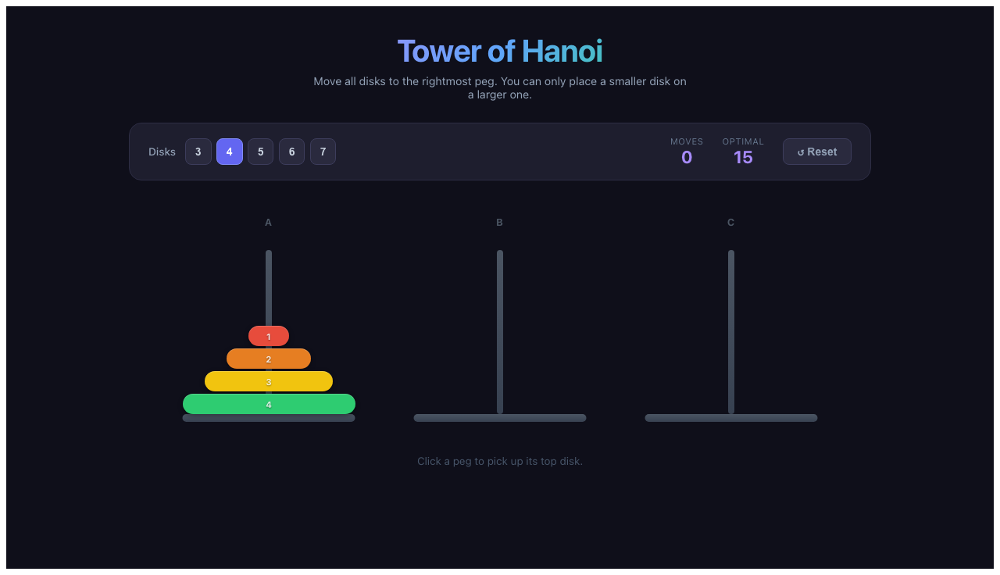
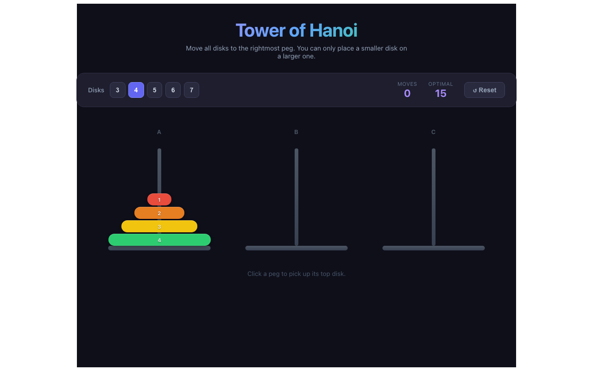

Application: Tower of Hanoi
Source Framework: Angular 22
Target Framework: React 18 + TypeScript + Vite
Scenarios: 33/33 passing
Visual Diff: 28.13% (threshold: 30%)
| # | Spec File | Scenario | Status |
|---|---|---|---|
| 1 | page-load.spec.ts | Should display title and subtitle | PASS |
| 2 | page-load.spec.ts | Should show 3 pegs labeled A, B, C | PASS |
| 3 | page-load.spec.ts | Should default to 4 disks on peg A | PASS |
| 4 | page-load.spec.ts | Should display moves=0 and optimal=15 for 4 disks | PASS |
| 5 | page-load.spec.ts | Should show initial hint text | PASS |
| 6 | page-load.spec.ts | Should have router-outlet | PASS |
| 7 | disk-count-selector.spec.ts | Should switch to 3 disks | PASS |
| 8 | disk-count-selector.spec.ts | Should switch to 7 disks | PASS |
| 9 | disk-count-selector.spec.ts | Should update optimal moves when changing disk count | PASS |
| 10 | disk-count-selector.spec.ts | Should reset moves to 0 when changing disk count | PASS |
| 11 | peg-selection.spec.ts | Should select a peg with disks and show indicator | PASS |
| 12 | peg-selection.spec.ts | Should NOT select an empty peg | PASS |
| 13 | peg-selection.spec.ts | Should deselect when clicking the same peg | PASS |
| 14 | move-mechanics.spec.ts | Should make a valid move and increment counter | PASS |
| 15 | move-mechanics.spec.ts | Should allow moving to an empty peg | PASS |
| 16 | move-mechanics.spec.ts | Should reject invalid move (larger disk on smaller) | PASS |
| 17 | move-mechanics.spec.ts | Should switch selection on invalid move to peg with disks | PASS |
| 18 | move-mechanics.spec.ts | Should clear selection after valid move | PASS |
| 19 | reset.spec.ts | Should reset the game | PASS |
| 20 | win-condition.spec.ts | Should show win banner after solving with 3 disks (optimal) | PASS |
| 21 | win-condition.spec.ts | Should show win banner without perfect score (non-optimal) | PASS |
| 22 | win-condition.spec.ts | Should ignore clicks after winning | PASS |
| 23 | win-condition.spec.ts | Should hide hint text after winning | PASS |
| 24 | disk-styling.spec.ts | Disks should have distinct colors | PASS |
| 25 | disk-styling.spec.ts | Disks should be stacked large-to-small (bottom-up) | PASS |
| 26 | disk-styling.spec.ts | Each disk should display its number label | PASS |
| 27 | keyboard-interaction.spec.ts | Should select a peg with Enter key | PASS |
| 28 | keyboard-interaction.spec.ts | Should move a disk using Space key | PASS |
| 29 | keyboard-interaction.spec.ts | Should solve the game entirely via keyboard | PASS |
| 30 | complex-game-flows.spec.ts | Should handle multiple moves and verify peg states | PASS |
| 31 | complex-game-flows.spec.ts | Should reset after winning and play again | PASS |
| 32 | complex-game-flows.spec.ts | Should solve with 5 disks using recursive algorithm | PASS |
| 33 | complex-game-flows.spec.ts | Placeholder for router-outlet presence | PASS |
Route: / (home) — Pixel diff ratio: 28.13% (PASS, threshold: 30%)

